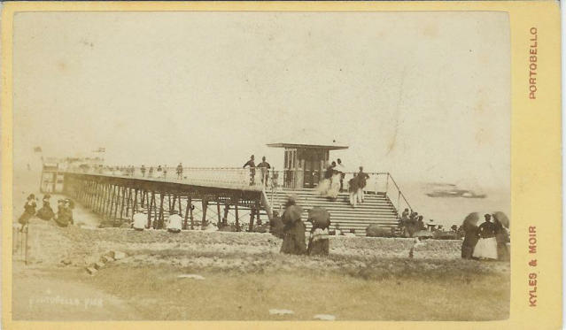
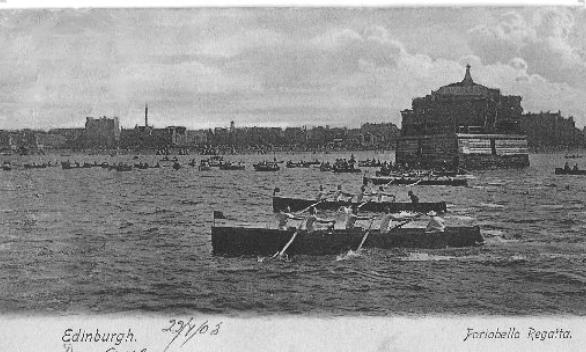
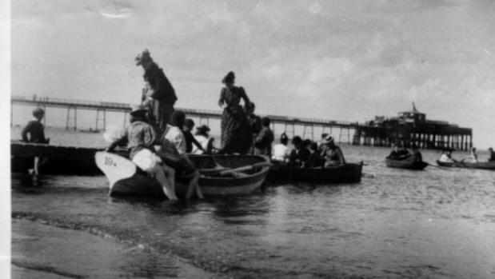
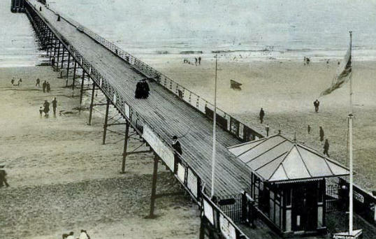
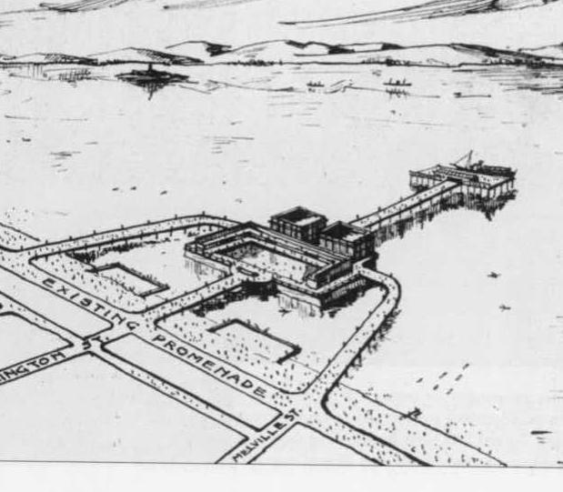

When Portobello Got its Pier!
May 23, 1871, was a fantastic day in the history of Portobello. An enthusiastic crowd had assembled for the opening of the resort’s latest – and greatest – attraction: a promenade pier, 1250 feet long, with, at the seaward end, a substantial pierhead surmounted by an imposing pavilion. The new pier, with its restaurant, bar and bandstand was a pleasure pier, pure and simple.

A photograph of the pier taken around 1880
The new pier was the first of its kind in Scotland and the occasion was graced by the civic dignitaries of Edinburgh, Leith and Musselburgh and, of course Portobello itself, which was then an independent burgh. It was a proud day too for Thomas Bouch, designer of the cast-iron pier who also contributed much of the capital of the Portobello Pier Company. While Portobello had enjoyed a period of prosperity as a “seaside watering place”, particularly since the arrival of the railway in 1844, the town, in the estimation of the more far-sighted inhabitants, was in danger of losing ground to rival resorts. Holidaymakers were looking for a greater variety of activities, and with promenade piers mushrooming south of the Border, a similar facility was a necessity for an ambitious resort like Portobello. But the prospect of the pier being opened to the public on the Sabbath roused a lot of ire. When the enabling act was still before parliament, Provost Wood of Portobello went to London to try to secure the Town council “a voice in the regulation of the times of opening and the manner of using the pier on Sundays.” The amendment sought by the Sabbatarians was, however, opposed by Lord Redesdale, the Chairman of committees for the House of Lords. Rejecting the protestations, his lordship expressed to Thomas Wood his opinion of the Portobello Sabbatarians. “You are a very peculiar people in Portobello,” he remarked, “to desire such a holy atmosphere.” Even after the work had been completed the Sabbatarians kept up the pressure. They complained that the pier company was “trading” on the Sunday, and this, they argued, would encourage others “to follow their occupations for gain on what should be a day of rest.” They further claimed that the resort had lost trade with families who had previously holidayed at Portobello going elsewhere “in consequence of the scenes of rioting and drunkenness which unfortunately abound the Sunday, and which render it unsafe for well- dressed females to appear on the streets without being exposed to insult.” The pier, nevertheless, was a very popular feature. Day-trippers flocked to Portobello from Edinburgh and roundabout. Saturday, July 8, 1871, for instance, saw 600 excursionists arrive by special train from Larkhall. Another 700 came from the iron towns of Newmains and Wishaw and 2000 spilled out of trains from Galashiels. The special holiday granted to mark the centenary of the birth of Sir Walter Scott brought a record number of excursions. Despite many counter-attractions marking the centenary, no fewer than 2500 people paid the one penny admittance charge to the pier that August day of 1871. Judging by the number of season tickets sold in the first three months of that first season (468 annual 292 monthly), many people must have been regular promenaders. Some went to bathe in the deep water at the pierhead and, to cater for their needs, the following season the pier company provided additional staging below the pier, with “canvas blinds” to protect the shivering swimmers from the snell east winds.

Around that time, other water sports were coming into vogue, and the pier was just the spur needed by the sailing fraternity. A Regatta Club was formed, with the first meeting being held in the summer of 1871. It was an enormous success with a huge number of visitors paying for admission to the pier. Around that time, other water sports were coming into vogue, and the pier was just the spur needed by the sailing fraternity. A Regatta Club was formed, with the first meeting being held in the summer of 1871. It was an enormous success with a huge number of visitors paying for admission to the pier.

The boatmen who plied for hire found the pier a tremendous asset; previously, they had on occasion to stagger through surging seas carrying passengers on their backs! It was this kind of practice that Provost Wood referred to on the opening day, when he spoke of the people of the town having long felt “the necessity of some way of getting out to sea, to enable our friends to enjoy boating and fishing without discomfort.” Above all, the new pier meant that excursion steamers could now visit Portobello regularly. Getting out to sea in the paddle-steamers that plied the Forth became the highlight of a visit to good old Porty for many holidaymakers. But these could also be a hazard – in 1887 the “Tantallon Castle” collided with the pier causing severe damage. Although the vessel’s owners paid compensation, the accident was almost the last straw for the proprietors of the pier. In the long run the pier proved to be a financial failure, the bad winter weather of the Firth of Forth bringing heavy expenditure on repairs and alterations. However, the steam boat owners came to the rescue, agreeing in 1889 to pay an annual subsidy of £200. It seemed a good investment, as there were not too many piers on the Firth of Forth that were accessible at all stages of the tide. Two years later, in 1891, the shipping concerns bought the pier outright, paying £1500 – a fraction of the original cost.

With repair bills a constant drain on the company’s finances, the pier proved as great a burden on its new owners as it had on the old. Nevertheless, it continued in business until the First World War. The end came in 1917 when the winter gales wrought such destruction that the structure was declared unsafe. Soon after what remained was demolished. In the Twenties and Thirties proposals were brought forward for the construction of a replacement but the plans never got beyond the drawing board. Portobello’s promenade pier was the first and last to be built in Scotland. Although it had a chequered career, the pier built by Thomas Bouch had a comparatively long life – it certainly lasted a lot longer than the structure that was his masterpiece. Bouch was the engineer who constructed the first Tay Railway Bridge and was knighted by Queen Victoria for his achievement. While his railway bridge across the Tay stood for less than two years, the promenade pier at Portobello survived for 46 years. (An earlier version of this article appeared in the Edinburgh Evening News on 23 May 1971) Eric Simpson
In 1933 Edinburgh Corporation announced ambitious plans for the construction of an open-air swimming pool and a new pier and Portobello architect, Mr Peter Jeffries made this proposal. His structure incorporated both elements and would have stretched between Bath Street and present-day Bellfield Street. Walkways across the Promenade from these streets led to the pier while another in the centre, at Marlborough Street [Wellington Street on the drawing], took swimmers to the pool. There would have been the usual entertainments at the end of the pier plus facilities for sailing. As Eric Simpson says the plan to build a new pier was dropped, although an open-air swimming pool did materialise a few years later, albeit in a different location.
